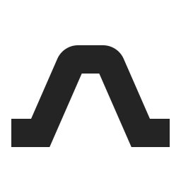

<!doctype html>
<html lang="en">
<meta charset="utf-8">
<meta name="viewport" content="width=device-width, initial-scale=1">
<title>XIPU AI Bridge — logo sketch</title>
<style>
  * { box-sizing: border-box; }
  body { margin: 0; background: #f3f2ee; color: #242424; font-family: Arial, Helvetica, sans-serif; }
  main { width: min(100%, 1120px); margin: auto; padding: 48px; }
  header, footer { display: flex; justify-content: space-between; gap: 24px; align-items: center; }
  header { font-size: 11px; letter-spacing: 1.7px; text-transform: uppercase; }
  header span:last-child { color: #797975; }
  .hero { display: grid; place-items: center; height: 350px; }
  .hero img { width: 210px; height: 210px; }
  .samples { display: grid; grid-template-columns: 1.3fr 1fr 1fr; border-top: 1px solid #d9d8d3; border-bottom: 1px solid #d9d8d3; }
  .sample { height: 196px; display: flex; flex-direction: column; justify-content: space-between; padding: 24px; }
  .sample:first-child { padding-left: 0; }
  .sample + .sample { border-left: 1px solid #d9d8d3; }
  .label { color: #797975; font-size: 10px; letter-spacing: 1.4px; text-transform: uppercase; }
  .lockup { width: 100%; max-width: 306px; height: 102px; object-fit: contain; object-position: left center; }
  .sizes { display: flex; align-items: center; justify-content: space-between; height: 102px; gap: 24px; }
  .sizes figure { margin: 0; display: grid; justify-items: center; gap: 14px; }
  figcaption { font-size: 10px; color: #797975; }
  .reverse { background: #242424; }
  .reverse .label { color: #b8b8b3; }
  .reverse img { height: 86px; width: 86px; align-self: center; filter: brightness(0) invert(1); margin-bottom: 8px; }
  footer { padding-top: 26px; font-size: 12px; line-height: 1.5; color: #797975; }
  footer a { color: #242424; text-underline-offset: 4px; }
  @media (max-width: 620px) {
    main { padding: 28px 24px; }
    .hero { height: 280px; }
    .samples { grid-template-columns: 1fr 1fr; }
    .sample:first-child { grid-column: 1 / -1; padding: 20px 0; height: 160px; }
    .sample:nth-child(2) { border-left: none; border-top: 1px solid #d9d8d3; padding-left: 0; }
    .sample { height: 170px; }
    .sizes { gap: 18px; }
    footer { align-items: start; }
  }
</style>
<main>
  <header><span>XIPU AI Bridge</span><span>01 / Span</span></header>
  <section class="hero" aria-label="Bridge symbol"></section>
  <section class="samples" aria-label="Logo applications">
    <div class="sample"><span class="label">Wordmark</span></div>
    <div class="sample"><span class="label">Small sizes</span><div class="sizes">
      <figure><figcaption>16</figcaption></figure>
      <figure><figcaption>24</figcaption></figure>
      <figure><figcaption>32</figcaption></figure>
      <figure><figcaption>48 px</figcaption></figure>
    </div></div>
    <div class="sample reverse"><span class="label">Reversed</span></div>
  </section>
  <footer><span>Two ends. One connection.</span><a href="xipu-ai-bridge.svg" download>Download SVG</a></footer>
</main>
</html>
